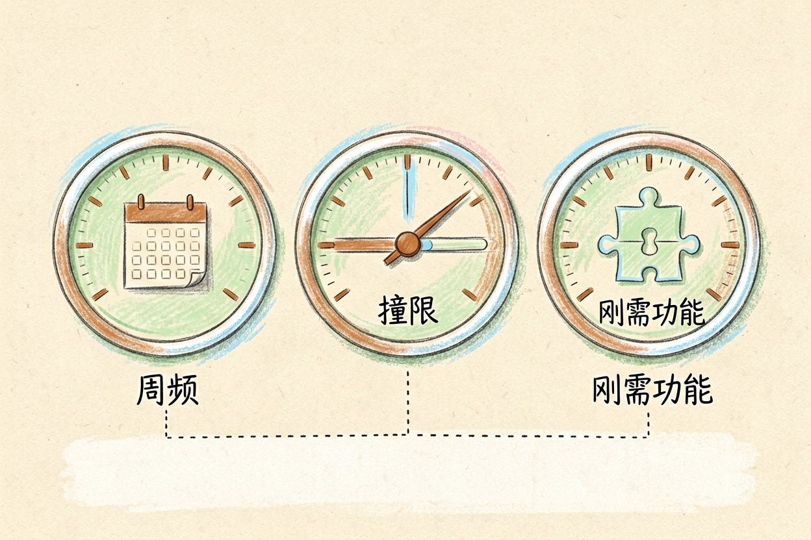
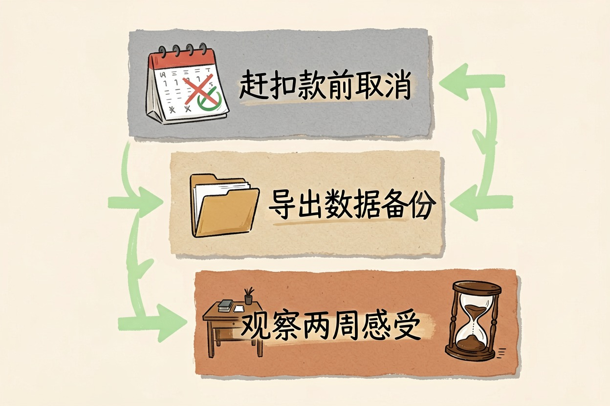

AI 工具订阅怎么选？一年别超这个数
多数人不需要同时订五个 AI。先分清四类订阅，再按频率和免费版撞限次数决定去留，一年就能省下一大笔。
AI 工具订阅费用怎么判断？先分清四类
AI 工具订阅费用该花多少，先给结论：多数人订 1 个付费主力 + 免费版补位就够，一年别超「一个主力」的心理价位。具体金额每家用官网当前说明为准，这里只给你判断方法，不报死数字。
把 AI 工具订阅费用按用途分成四类，再决定每类要不要留：
- 对话写作类：ChatGPT、Claude、DeepSeek、豆包、Kimi。适合问答、写稿、改文案。ChatGPT Plus 值得开吗专门拆过这一类。想比官方定价，看 OpenAI 定价页{:target="_blank"}和 Anthropic 定价页{:target="_blank"}。
- 编程类：GitHub Copilot、Cursor 等。适合写代码、查报错。
- 图像类：Midjourney、即梦、可灵等。适合出图、做设计素材。
- 搜索研究类：Perplexity、秘塔 AI 搜索等。适合查资料、读长文。
大多数人的误区，是四类各订一个。结果订阅一堆，常用的只有一个。先把自己现有的订阅按这四类归位，重叠最多的一类，就是第一个该砍的。
一个订阅值不值，看三个信号

判断任何一项 AI 工具订阅费用值不值，别看广告，看三个信号：
信号一：每周用几次。 一周打开不到三次的工具，基本可以退订。订阅买的是高频使用权，不是「偶尔想起」的存在感。
信号二：免费版是否撞限。 如果你用免费版一周都没碰到一次限制，说明付费纯属多余。Claude 免费版够用吗和Gemini 免费版怎么样都是这个判断逻辑。反过来，天天被限速卡住，才值得升级。
信号三：付费独有功能用不用得上。 仔细看付费档多出的功能，你过去一个月用过几个？模型上限、长上下文、图像生成，用不上的都是溢价。
省钱四招：免费版补位、年缴、合购、先订一个月
把 AI 工具订阅费用压下来，靠方法不靠省：这四招最管用。
第一招，免费版补位。 低频需求全部走免费版，免费 AI 工具推荐里列的都是稳定可用的免费档。付费主力只留一个。
第二招，年缴 vs 月缴。 年缴通常单价更低，但前提是你确定会用满一年。拿不准的新工具，先月缴一个月再说，别一上来就年缴。
第三招，合购。 部分工具的团队版支持多人共享，和朋友拼一个比各买各的便宜。注意只在官方渠道操作，别碰低价代充和共享账号。
第四招，先订一个月再续。 所有新订阅都走「月缴试用→看信号→再转年缴」的路径，避免冲动消费。
订了用不上怎么办

已经订了但用不上的 AI 工具订阅费用，别硬扛。按顺序做三件事：
- 查账单周期，赶在下一个扣款日前取消；
- 导出需要的数据，历史记录、生成内容、设置别丢；
- 取消后观察两周，如果没觉得缺，说明本来就不该订。
退订不是损失，是止损。把省下来的预算留给真正高频的那一个。
帮我盘点订阅并判断去留：
我目前订了这些 AI 工具：（工具名 + 月费 + 每周使用次数）
请按以下标准逐项给建议：
1. 每周使用少于 3 次的，标记「可退订」；
2. 免费版已够用的，标记「降级」；
3. 功能重叠的两个，保留更常用的那个；
4. 只保留 1 个付费主力，其余给免费替代方案；
5. 不确定的价格信息直接说「需查官网」，不要编数字。一年别超这个数：月末自查清单
最后给你一张能反复用的自查清单，每月末花十分钟过一遍，AI 工具订阅费用就不会失控：
- [ ] 现有订阅按四类归位，是否有一类订了多个？
- [ ] 每个工具上周打开过几次？少于三次的标出来。
- [ ] 免费版上周撞限了吗？没有的考虑降级。
- [ ] 月缴还是年缴？新工具是不是都走了「先订一个月」？
- [ ] 有没有通过非官方渠道充值的？有就立刻停。
别囤订阅。看到新工具就想开会员，是 AI 工具订阅费用失控的最大原因。留一个主力，其余免费补位，一年下来你会发现，省下的钱够再买一个真正高频的工具。具体价格和免费额度变动频繁，以官网当前说明为准，本文不承诺具体数字。
本文信息核对于 2026-08-06。AI 产品的价格、免费额度与功能变动频繁，实际以各工具官网当前说明为准。